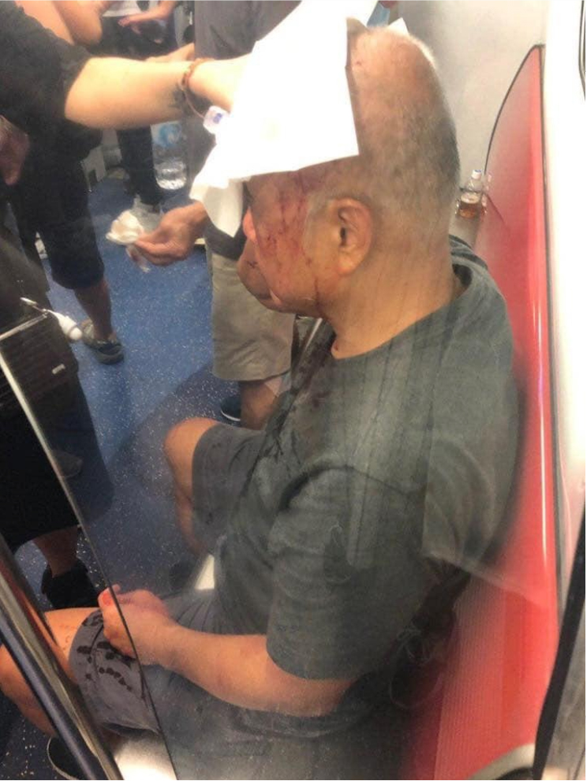
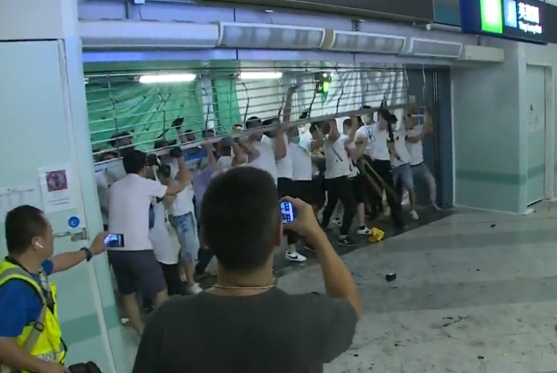

無辜伯伯被爆頭
夜歸長者 慘遭牽連 下一個受害者隨時是你！
大批手持武器的白衣暴徒衝上月台，追打車廂內無辜的市民，一名伯伯慘受牽連，被打至頭破血流。

記者站內遇襲 親身直擊
無差別襲擊 記者照打
《立場》女記者直撃報導期間，於月台被白衣暴徒襲擊，全身多處受傷流血，後腦腫起，事發半小時未見警員到場執法。 now 新聞台攝影師被數名穿白衣男子襲擊，攝影機被擲出車站外粉碎。

白衣暴徒 硬闖追擊市民
視法治如無物
港鐵因應警方要求關閉元朗站，大批白衣暴徒卻強行扯開鐵閘，並持棍追打站內的市民，伏擊圍毆，現場並無警員。

警署落閘 拒求助 999熱線失聯
香港警察你還敢相信嗎?
市民遇襲打999求助，接線中心卻向市民稱:
「驚就唔好出街」
更慘被CUT線。元朗及天水圍警署一度落閘，拒絕市民求助！無辜市民最終只能向消防及救護尋求協助。
白衣舉棍 與警同行
疑警黑聯手，選擇性執法
百名白衣暴徒手拿鐵枝、木棍追打市民，凌晨於元朗圍邊村聚集，警方大遲到，未有拘捕任何人。
八鄉分區指揮官：
「遲唔遲呢，我唔知…我睇唔到錶呀，Sorry呀！」
警方：「唔係個個著白衫就代表參與打鬥，唔見有人揸攻擊性武器」